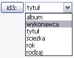
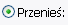
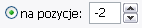

Zakładka Główny jest miejscem definiowania operacji zmiany nazw.
Musisz wykonać zmiany by wykonać jakiekolwiek zmiany nazw.
[Przyciski]
[Kolejność operacji]
[Pola zmiany nazw:
Szukaj & Zastąp/Modyfikuj/Przenieś Wstaw Zmień długość]
PRZYCISKI:
Przyciski działają poprzez wpisanie tekstu w pola tekstowe. Po naciśnięciu Podgląd, tekst zostanie przekształcony w działanie. Przykładowo aktywowanie pola Przedrostek i kliknięcie na przycisk data spowoduje pojawienie się tekstu ':data:' w polu tekstowym, co następnie zmieni się w dzisiejszą datę podczas zmiany nazw elementów. To pozwala na sporą elastyczność gdyż możesz miksować i porównywać działania i tekst. Więc jeśli chciałbyś mieć separator pomiędzy przedrostkiem a oryginalną nazwa pliku to po wciśnięciu przycisku wpisz'_', pole teraz zawiera ':data_:'. Zakładając, że dzisiaj jest 6 sierpień 1223r. to pliki zmienią nazwy na: 08-08-1223_pil.ext
Możesz wpisać tak wiele działań i tekstu jak chcesz - dopóki nazwa elementu nie będzie dłuższa niż 255 znaków. Więc coś takiego będzie jak najbardziej prawidłowe:
:liczba:_jakiś tekst_:data:_:czas:_:ścieżka:-:wykonawca:-:tytuł:
Przycisk podfolder wstawia separator katalogu w polu katalog.
Pojawia się ona jako tekst ':/'. W innych polach nie powoduje zmian.
Przycisk Numerowanie wstawia sekwencję automatycznego numerowania. Domyślnie numerowanie rozpoczyna się od 1, rośnie o 1 i jest wypełniane 0 zależnie od najwyższej liczby (więc jeśli masz 100 elementów zostaną ponumerowane 001, 002, itd.). Te i inne ustawienia możesz zmienić w zakładce Numerowanie.
Przyciski Data i Czas wstawiają pre-formatowaną datę lub czas. Domyślny format daty to: MM-DD-RRRR, a czasu: GG.MM.SS
(format 12 godzinny). Zostaną użyte bieżące czas i data. By zmienić ustawienia użyj zakładki Data i Czas.

Przycisk ID3 wstawi informację ID3 uzyskaną z pliku .mp3. Mówię 'pliku' ponieważ program "zajrzy" do każdego pliku i pobierze z niego informacje. Możesz wybrać jakie informacje mają być pobierane używając rozwijanego menu. Jeśli plik mp3 nie zawiera informacji, które chcesz wstawić do nazwy to zostanie wstawione puste miejsce. Pliki i foldery innych rodzajów są ignorowane.
KOLEJNOŚĆ OPERACJI:
Kolejność w jakiej aplikacja wykonuje poszczególne działania. Różni się od kolejności na interfejsie (ale jest bardziej logiczna - czyż nie?) więc pomyślałem, że ją tutaj wymienię.
- Zmiana długości
- Szukaj i zastąp/Modyfikuj/Przenieś
- Przedrostek
- Przyrostek
- Rozszerzenie pliku
- Wstawianie
POLA ZMIANY NAZW:
To jest wewnętrzne serce Métamorphose. By wykonać jakąkolwiek zmianę nazw musisz zrobić zmiany tutaj.
Te pola zaznaczenia pozwalają ci wybrać jaka część elementu zostanie zmodyfikowana. Jeśli zaznaczono 'nazwa' przetwarzane będą nazwy plików i folderów. Jeśli zaznaczono 'rozszerzenie' zmiany obejmą rozszerzenie.
Ta funkcja pozwala na dodanie katalogu (folderu) w którym zostaną zapisane elementy ze zmienionymi nazwami. Można dodawać podfoldery przyciskiem 'podfolder'. W polu tym możesz również używać pozostałych przycisków opisanych powyżej.
Dodaje przedrostek do elementu.
Dodaje przyrostek do elementu.
To jest potężne narzędzie do wyszukiwania elementów i ich modyfikacji. Większość działań wykonywanych jest z jego użyciem. Możesz wyszukać nazwy dla wpisanego tekstu, używając regularnego wyrażenia lub wg pozycji. Następnie możesz całkowicie zastąpić tekst, zmienić wielkość liter lub przenieść w inne miejsce.
Tekst do wyszukania. Możesz wpisać dowolny znak - by szukać spacji po prostu naciśnij spację. Jeśli to pole pozostanie puste to dopasowywana jest cała nazwa.
Podczas wyszukiwania rozróżniana jest wielkość znaków.
Szukanie regularnych wyrażeń. Każdy wyszukany element zostanie wskazany. Po zaznaczeniu I będzie rozróżniana wielkoścć znaków, zaznaczenie U włączy wyszukiwanie w trybie Unicode (by szukać znaków nie ascii takich jak 'é' czy \w).
Szukanie zestawu znaków wyrażenia regularnego. ^ wyszuka wszystkie znaki, które nie należą do zestawu, [a-z] wyszuka wszystkie znaki alfabetyczne (pisane małymi i WIELKIMI literami) oraz [0-9] wyszuka liczby.
Możesz tego użyć również bez określania wyrażenia regularnego. W innym przypadku WR jest kompilowane jako: '(wyrażenie regularne) | (zestawy znaków)'.
Również [a-z] nie jest naprawdę '[a-z]' tylko '[^\W\d]' dla prawidłwego wyszukiwania w trybie Unicode.
Szukanie wg pozycji. Pierwsza liczba oznacza gdzie należy zacząć szukać. 0 zawsze oznacza pierwszy znak w nazwie.
Ile znaków porównywać? Nie przejmuj się jeśli wpisana wartość przekroczy długość nazwy.
Określa czy wyszukiwanie zacząć od początku czy od końca nazwy. Jeśli od końca to wartość Pozycja jest automatycznie zmieniana zależnie od Długości.
Zastępuje każdy wyszukany obiekt przez tekst lub działanie. Przy używaniu regularnych wyrażeń można użyć ukośniki (np. wpisać "\1" - bez cudzysłowów).
Zmienia wielkość znaków wyszukanych elementów.

Przenosi pierwszy wyszukany element na pozycję.

Określa wybraną pozycję. 0 ustawia wyszukany element na pierwszym miejscu w nazwie, a -1 na ostatniej.
Użyj wpisanego tekstu do określenia miejsca przesunięcia. Możesz ustawić zarówno czy wyszukiwany element ma być wstawiony przed czy po tym tekście jak i zastąpić go. Jeśli niczego nie wyszukano nic się nie stanie. Można również używać wyrażeń regularnych.
|
Użyj tego by wstawić tekst lub działanie w określone miejsce nazwy.
Określ dokładny punkty wstawienia. Rozpoczyna się od 0 i rośnie, więc 0 = pierwszy znak, 1 = drugi znak, -1 ostatni znak.
|
Zmiana długości nazwy na różne sposoby.
Jak zmodyfikować długość. Wypełnienie zwiększy długość do podanej wartości, Skróć skróci a Oba, cóż, wykonuje obie czynności.
Zmienia długość do wskazanego rozmiaru. Jeśli używasz wyłącznie opcji Wypełnienie a nazwa jest wskazanej długości lub dłuższa lub jeśli nazwa jest krótsza od wskazanej długości i używasz opcji Skróć nie zostaną dokonane żadne zmiany. Użycie opcji Oba zmieni długość wszystkich nazw dokładnie do wskazanego rozmiaru.

Kierunek modyfikacji.
To jest znak do użycia przy wypełnianiu. Możesz użyć dowolnego znaku występującego w twoim komputerze.
Pozwala ustawić konkretny punkt wstawienia wypełnienia. Jeśli wartość wynosi 0 będzie to pierwszy znak wybranego kierunku. Jeśli wartość będzie inna od 0 opcja będzie działać jak wstaw na pozycję (1 = drugi znak, -1 = ostatni znak) całkowicie ignorując kierunki.
|